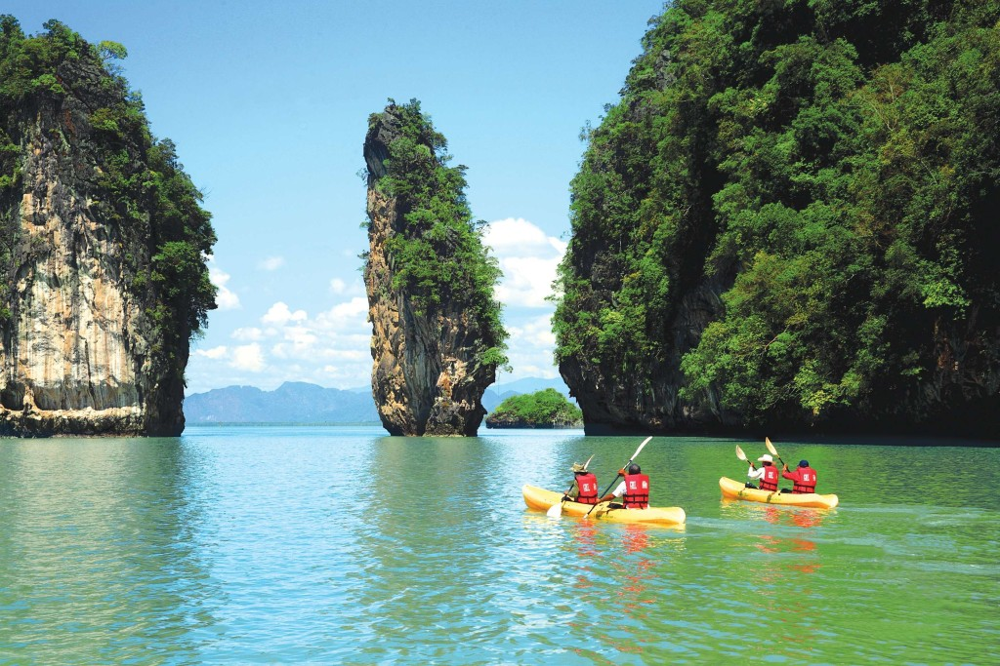

Krabi | su meile is pietryciu azijos
2020.10.29 10:08
su meile is pietryciu azijos
Įrašo navigacija
← Pulau Langkawi Phi Phi. Let’s go to THE BEACHKrabi
Paskelbė Tautvydas Vaičius1
Rugepjutes antru dienu issijudinom is Langkawi (ir Malaizijos) Tailando link. Siena kirtom keltu, ir lietuviska penkiasdesimt velnias zino kelinto dydzio Karolio peda ir vel sudrebino Tailando zeme 😀 Issilaipinom pietu Tailando imigraciniam punkte Satun. Nors ir kaip graziai sypsojomes pasienio pareigunei, vistiek teko susimoketi po 1000 sandalu, tfu, batu (~30usd) uz viza. Idemiai stebejau kaip kitas pasienio pareigunas aiskiai pirma karta pildo duomenis del vizos, o dar kitas saiposi is jo. Taip idemiai, kad net nebuvo laiko pagalvoti apie svarbesnius klausimus, pvz. o kiek dienu galios musu viza? Kai i Tailanda keliavome keliones pradzioje, viza buvome pasidare dar Vilniuje, ir ji galiojo graziu 30 dienu. Is nutylejimo galvojome, kad tokia pat gausime ir cia. O gavome tik 15d Ir tai data pase atrodo taip: 11 6 AUG 2012, nei tai vienuolikta, nei sesta. O gal 11+6? Ilgai ziurejome kaip ponai pareigunai lanksto pirstus atskaiciuodami 15 dienu ir gauna kaskart skirtinga data. Galu gale sutareme. Palikom pareigunus ramybei. Lauke, prie autobuso keli amerikieciai nekantriai lauke kol mes susitvarkysim vizos reikalus, mat jiem niekseliam vizos nereikia. Orelis gerokai virs 30 laipsniu, vejo jokio, mes uztrukom gera pusvalanduka. Kazkokie suprakaitave atrode kolegos amerikieciai. Hmm. Gal old spajs nenaudoja. Nesvarbu.
Atvaziavom i Krabi Town, kur ir apsistojom nakciai. Pats Krabi Town niekuom nezavi, nebent pigia nakvyne, pigiu skaniu maistu ir pigia motoroleriu nuoma (5usd parai). Visa kita diena praleidom ant motoroleriu.
9h ryto jau buvom ir i skrandi imete ir i baka uzpyle. Kaip jau ne karta isitikinom geriausia negaisti laiko ieskant vietinio tourist office “rekomenduojamu aplankyti“ vietu, ar deliojant marsruto ant zemelapio. Ir dabar nepasakyciau kur zemelapyje vazinejomes, bet buvo kul. Radom grazaus pajurio, uolu, ir geruli skardi dziunglese. Grizom su tamsa ir tusciu baku.
0.000000 0.000000
Share this:
Twitter Dalintis FacebookPatinka:
Kaip Įkeliama...Susiję straipsniai
Pažymėta tailandas
Rgp · 04
Įrašo “ Krabi ” komentarų: 1
vaidaa 7 rugpjūčio, 2012 9:38 pmKada jūs būsit Koh Phangan? Atsiliepkit, pakviesiu į turgų vakarienės ;D
AtsakytiParašykite komentarą Atšaukti atsakymą
Įrašo navigacija
← Pulau Langkawi Phi Phi. Let’s go to THE BEACHNaujausi įrašai
Phi Phi. Let’s go to THE BEACH Krabi Pulau Langkawi Melaka Skrendam toliauArchyvai
2012 m. rugpjūčio mėn. 2012 m. liepos mėn.Kategorijos
UncategorizedMetainformacija
Registruotis Prisijungti Entries feed Comments feed WordPress.com Create a free website or blog at WordPress.com. | Sukūrė: WordPress.com %d bloggers like this: